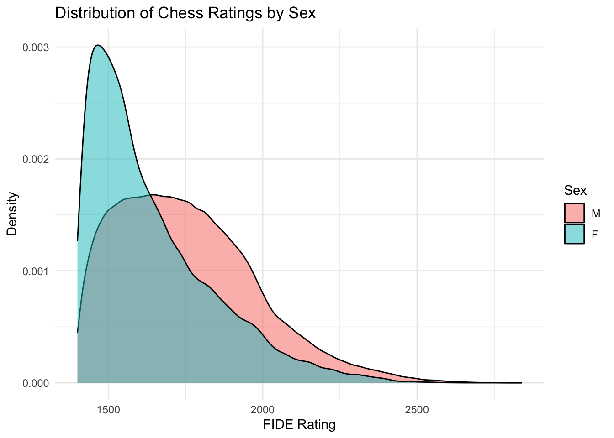
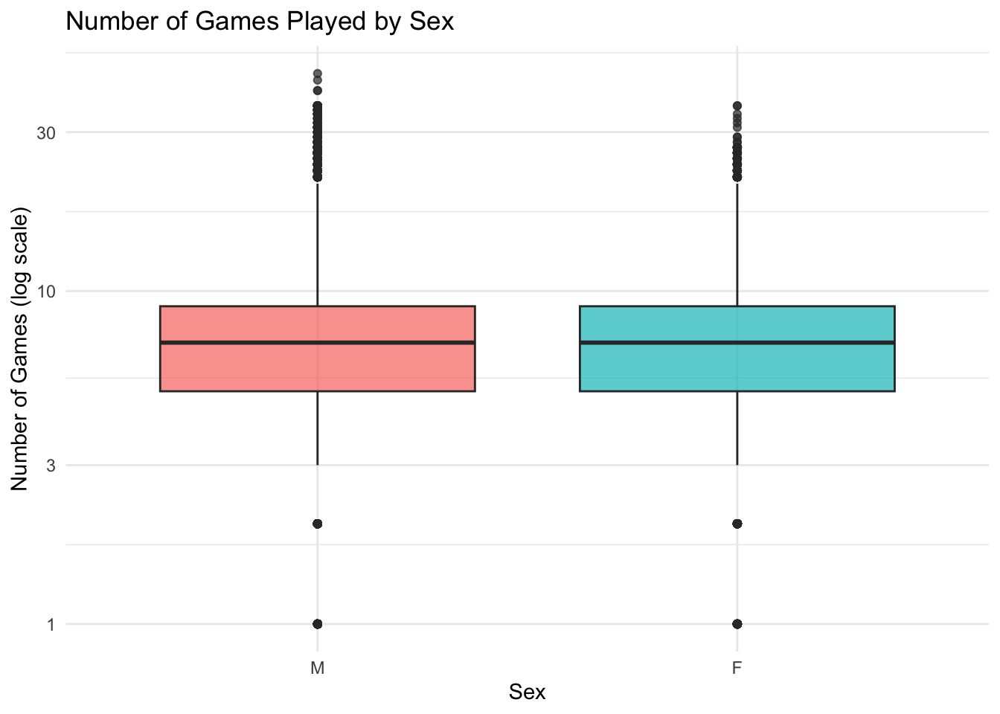
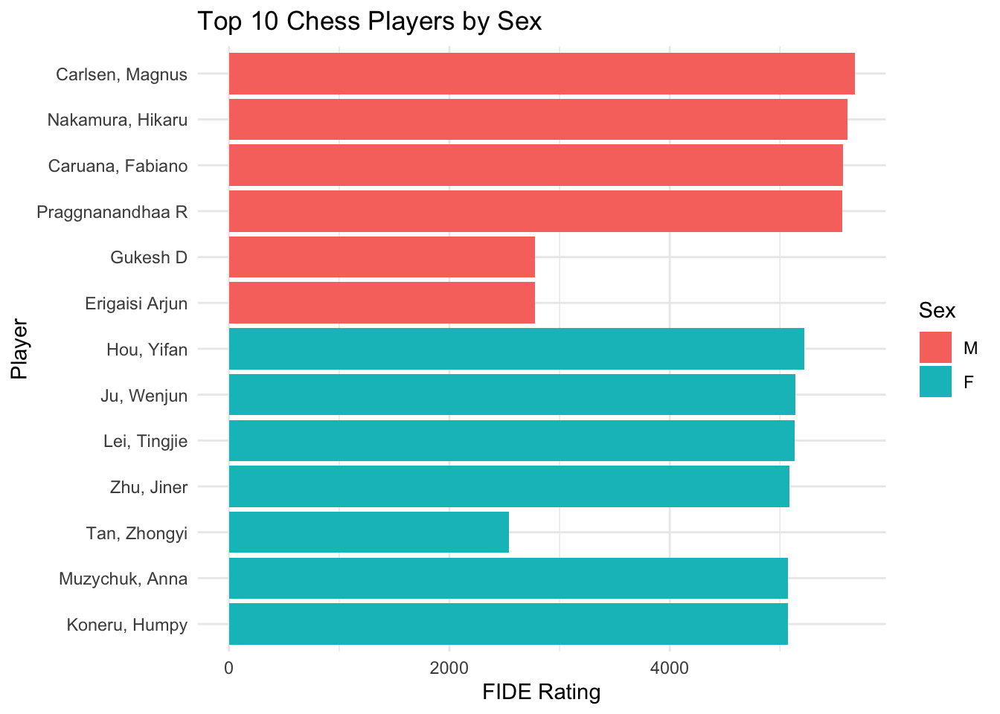
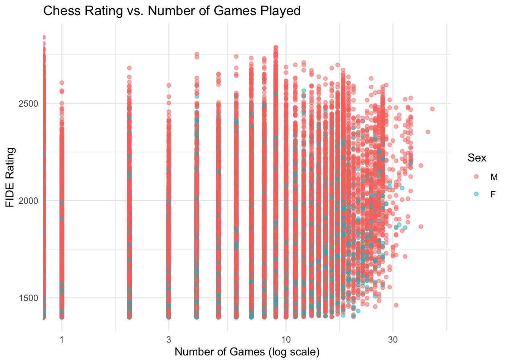

Homework 04
TidyTuesday Section (optional)
You can count work on this week’s TidyTuesday toward the exceptional work required for an A in the Homework component.
Explore the week’s TidyTuesday challenge. Develop a research question, then answer it through a short data story with effective visualization(s). Provide sufficient background for readers to grasp your narrative.
research question: How do chess ratings differ by sex?
Code
# Combine August and September datasets (optional, for a fuller dataset)
fide_all <- bind_rows(
fide_ratings_august %>% mutate(month = "August"),
fide_ratings_september %>% mutate(month = "September")
)
# Ensure sex is a factor
fide_all$sex <- factor(fide_all$sex, levels = c("M", "F"))
# 1. Distribution of ratings by sex
ggplot(fide_all, aes(x = rating, fill = sex)) +
geom_density(alpha = 0.5) +
labs(title = "Distribution of Chess Ratings by Sex",
x = "FIDE Rating",
y = "Density",
fill = "Sex") +
theme_minimal()
Distribution of Ratings by Sex The density plot shows that the majority of both male and female players are clustered in the lower to mid-range of FIDE ratings, but male players tend to have a slightly wider distribution, especially in the higher rating ranges. This suggests that while many players of both sexes achieve moderate ratings, men are more represented among the very high-rated players.
Code
# 2. Number of games played by sex
ggplot(fide_all, aes(x = sex, y = games, fill = sex)) +
geom_boxplot(alpha = 0.7) +
scale_y_continuous(trans = "log10") + # log scale if games vary a lot
labs(title = "Number of Games Played by Sex",
x = "Sex",
y = "Number of Games (log scale)") +
theme_minimal() +
theme(legend.position = "none")
Number of Games Played by Sex The boxplot of games played reveals that male players generally have more games under their belt than female players. This difference in experience could partially explain the gap seen in the higher rating ranges, as more games can provide greater opportunities for skill development and rating improvement.
Code
# 3. Top 10 players by rating for each sex
top_players <- fide_all %>%
group_by(sex) %>%
slice_max(rating, n = 10) %>%
ungroup() %>%
arrange(sex, -rating)
ggplot(top_players, aes(x = reorder(name, rating), y = rating, fill = sex)) +
geom_col() +
coord_flip() +
labs(title = "Top 10 Chess Players by Sex",
x = "Player",
y = "FIDE Rating",
fill = "Sex") +
theme_minimal()
Top 10 Players by Sex Examining the top 10 rated players of each sex highlights the disparity at the very top of the competitive spectrum. Male players dominate the highest rating positions, though several female players are also represented among top performers. This chart emphasizes the exceptional skill of top female players while illustrating the ongoing imbalance in representation.
Code
# 4. Scatterplot: Rating vs. Games, colored by sex
ggplot(fide_all, aes(x = games, y = rating, color = sex)) +
geom_point(alpha = 0.5) +
scale_x_log10() + # log scale for games
labs(title = "Chess Rating vs. Number of Games Played",
x = "Number of Games (log scale)",
y = "FIDE Rating",
color = "Sex") +
theme_minimal()
Rating vs. Games Played The scatterplot of rating versus number of games played indicates a positive trend: players with more games tend to have higher ratings, regardless of sex. However, the spread suggests that experience alone does not fully account for rating differences; some players achieve high ratings with relatively fewer games. The pattern is similar for both sexes, though the density of points suggests more male players populate the upper-right corner (high games, high ratings).
Overall Interpretation The visualizations collectively tell a story about both skill and participation differences between male and female chess players. While most players cluster in similar rating ranges, male players are overrepresented among the highest ratings and the most experienced players. Nevertheless, the data also highlights the strong performance of female players, suggesting that when given opportunities to play more games, female players can achieve competitive ratings comparable to male peers. This analysis points to both structural factors (experience/opportunity) and performance potential as key elements in understanding rating differences by sex.